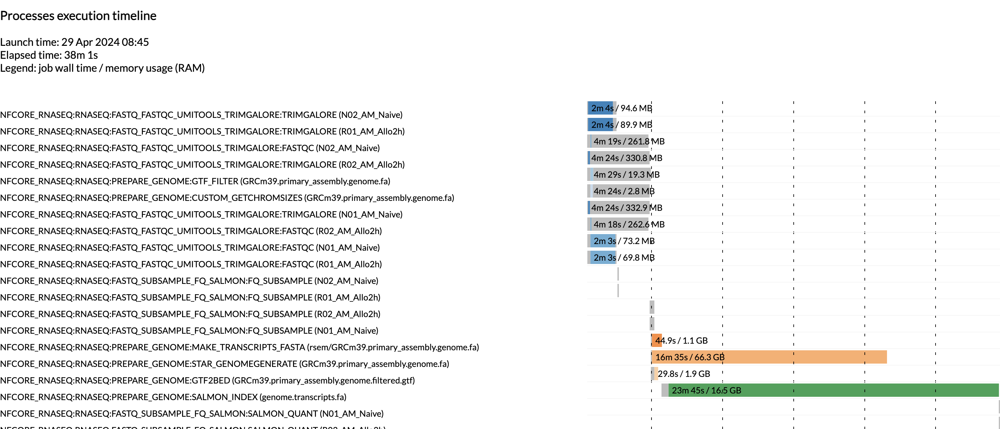
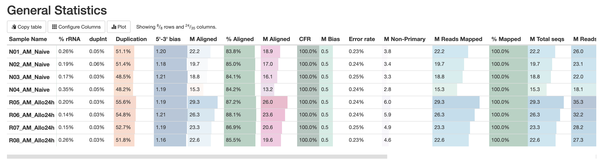
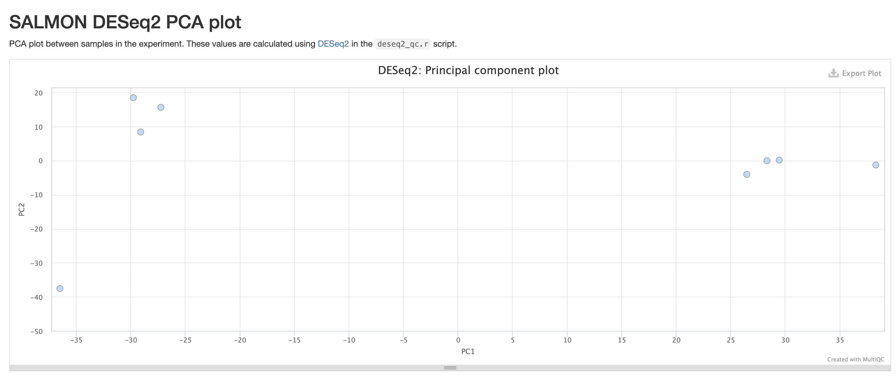
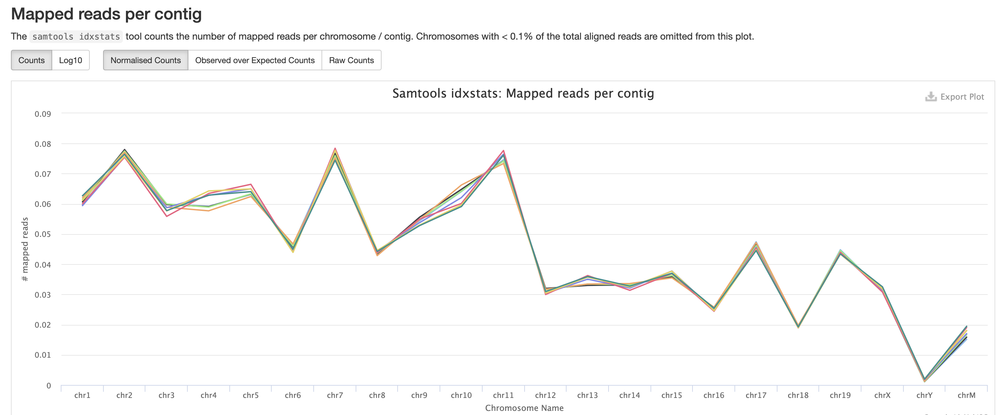
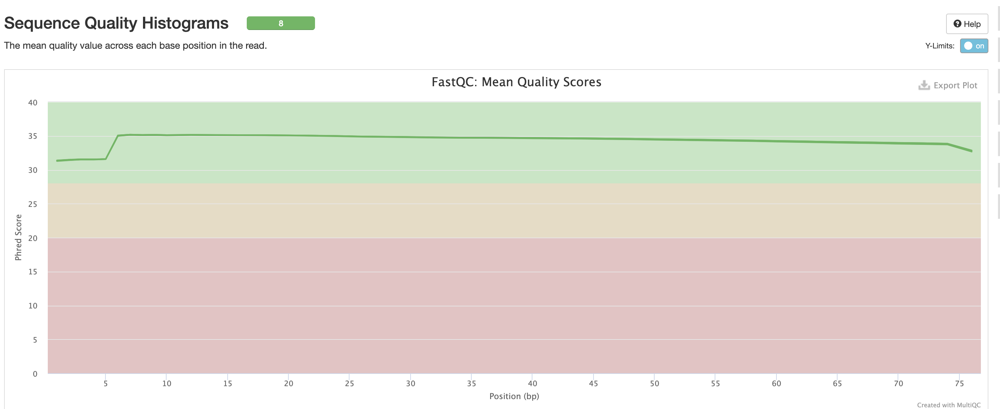
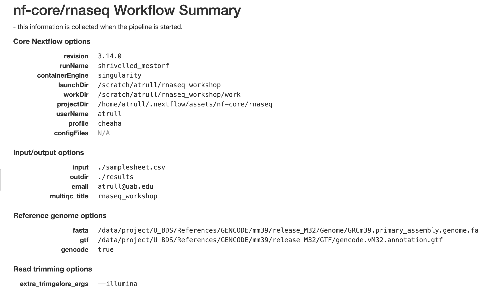

RNA-Seq Secondary Analysis
Austyn Trull, Bharat Mishra, Ph.D., Lara Ianov, Ph.D.
Introduction to Secondary Analysis
An experiment can typically be broken down into 3 different parts:
Primary Analysis - There can be a bit of a disjoint in the community about what constitutes a primary analysis. Some consider trimming + initial qc to be part of it. For this workshop, we’re going to consider this analysis to be the steps performed by a sequencing core and the end result of this will be a demultiplexed FASTQs. That is very much an oversimplification about what happens at this step, as there is a lot of complexity, an entire workshops could be given (and are given) solely on this step.
Secondary Analysis - Secondary analysis are the steps in a workflow where FASTQ files are quality-controlled (QC), trimmed, aligned, and quantified. The type of quantification produced differs depending on what kind of analysis you are performing - e.g.: a single-cell analysis would need a feature-barcode matrix, whole genome analysis would work with variant call files. For bulk RNA-seq analyses, the quantification represents expression count files.
Tertiary Analysis - Tertiary analysis takes the output from secondary for additional analysis, visualization and data interpretation. The additional analysis steps may include more QC, data filtering, annotation and experimental specific analysis (driven by study design). A typical bulk RNA-seq analysis, includes differential and co-regulated expression of genes and to infer their biological meaning.
The purpose of this workshop will be to provide a more in-depth look at secondary and tertiary analysis from data derived from short read sequencing.
Introduction to FASTQ Files
As mentioned previously, secondary analysis starts with a FASTQ file. A FASTQ file is a standard file format for storing the raw sequences and their qualities obtained from primary analysis.
Taking a quick look at the input files provided with the workshop, we
can tell it’s a FASTQ because it has the .fq file
extension, but you’ll also see .fastq as an alternative
extension. The other file extension we see on the files is
.gz. gz indicates that the file is zipped
using the gzip tool. Gzip is both the name of the tool and the name for
the file compression algorithm. File compression is typically performed
to minimize the storage space the file takes up on a file system. This
is especially important for FASTQs because they can be very large files.
Furthermore, many standard tools for secondary analysis of RNA-seq
accept compressed FASTQs (in the gzip format) as input, and thus, the
user does not need to de-compress the files prior to starting the
analysis.
Let’s go ahead and peek at the FASTQ file itself. We’ll use
gunzip -c to produce the file contents to stdout, and we’ll
just look at the first 10 lines using head.
gunzip -c <fastq.name> | headWe can see that there is a discernible pattern. Each set of four lines is considered a single entry. The four lines are:
- The sequence identifier. The exact contents of this vary depending on many different factors, but are always unique for each entry.
- The sequence. A string of A, T, C, G, and N. (N indicates the base could not be identified)
- A separator. Starts with a
+sign. Sometimes this will also have a quality score identifier that matches the sequence identifier, but it’s also not uncommon for this to only contain the+sign. - The sequence qualities. These indicate the quality for the base at the same position. These are encoded using characters, and there are ways to convert them back into a numerical value. See the table below for quick guide on the character-score translations. The reason these are stored as characters is again to reduce the amount of space the FASTQ takes up on a file system.
QC-ing FASTQ Files
Before starting an analysis, there are a couple sanity checks that can be run on a FASTQ file in order to ensure they are correct (for example, not corrupted from a download).
Checking line count
The first sanity check is to perform just a simple word count on the file.
gunzip -c <fastq_file> \| wc -lDiscussion Question
What is the purpose of this check?
If you recall, the format of the FASTQ file is each entry is separated into four lines. So a very quick sanity check to perform is making sure the number of lines in a FASTQ is divisible by 4.
NOTE
If you are running the above command on a computing cluster or high performance computer, please ensure that you do not run this command on the login or head node. With large files, such as FASTQ files, this command can cause high memory usage and cause issues for other users that are also using the high performance computer. In order to run the command either submit the command onto the cluster or run the command while in an interactive session. Example commands for how to perform this will be demonstrated later in the lesson.
Md5 Checks
The second sanity check is a little more complex, but it’s known as an md5 check. An md5 is a string of characters and numbers. The important note is that the md5 is unique for every file, so two files having the same md5 hash indicates a high probability the files are the same (we say probability because it is technically possible for two different files to have the same md5, however because of how its calculated this is an extremely low chance and for the purposes of this course you can consider md5’s to be unique to a file).
The reason to perform this check is often due to the fact that FASTQs are uploaded and downloaded from other sources, so the md5 can be computed to determine if there is a potential chance for corruption during either the upload or download process. If the source (e.g.: sequencing core, collaborators etc.) does not provide any md5’s, it is worth reaching out to the source with this request. Once these are generated you are able to check the md5s of the FASTQs after they‘ve been downloaded against the md5’s that the source generated. Ensuring these values are the same is a good way to ensure no corruption happened during the download process.
The way to generate a md5 of a local file is using the following
md5sum command
md5sum <fastq_file>The output of the above can be checked against md5 received from a
sequencing core to ensure they match perfectly. Additionally, if you
receive a text file containing all md5 files across various samples
(named md5sum.txt in the example below), they can be
efficiently checked with the following command:
# given you are in a directory that contains all fastq files
# and that you have the md5sum txt file from a sequencing facility:
md5sum -c md5sum.txtDiscussion Question
Given that you can generate md5 yourself for a given file, why is it critical to have the md5 from the data generators/sequencing facility?
Intro to RNA-Seq
Discussion Question
Has anyone performed any rna-seq analysis? What tools have you used?
The FASTQ file on its own doesn’t really tell much information. In order to move forward with our project, these raw base calls need to be converted into raw expression data.

The rnaseq pipeline developed and published by nf-core will be the pipeline that this lesson will be using to analyze the FASTQs.
This rnaseq pipeline has a lot of tools that are part of it, and a user may choose to run it in default mode (tools that are executed by default), or configure it to run with more or less tools/steps.
Note: Importantly, this pipeline is designed for
short-read sequencing (e.g.: Illumina). Long-read bulk RNA-seq requires
distinct analytical steps which are linked to the nature of long read vs
short read sequencing. While bulk long-read sequencing is beyond to
scopre of this workshop, nf-core has pipelines for long-read sequencing
(e.g.: for more information see the nf-core/nanoseq
pipeline).
RNA-Seq workflows follows generally the below pattern:
- Quality-control
- Read trimming/filtering
- Alignment or quasi-mapping
- Counting / quantification
The pipeline contains several quality control steps in order to assist in the determination of any steps where an error may have happened or to determine viability of the samples as they progress through the pipeline.
Additionally the pipeline also provides support for experimental specific approaches which we will not cover in today’s workshop. This includes as an example: removal of genome contaminants in expected model types (e.g.: mouse PDX / xenograft) and inclusion of Unique Molecular Identifier (UMI) tagging for PCR deduplication (an optional molecular preparation step).
Trimming and Filtering
A common initial step in RNA-seq workflows is often read trimming and
filtering. A common type of trimming is adapter trimming. Adapters are
artificial sequences that are attached to the DNA fragments to be
sequenced to ensure that the fragment attaches to the sequencing flow
cell. Adapters are normally also sequenced with the fragment, meaning
some of the reads may have bases that are not biological and can impact
the accuracy of mapping and other downstream analyses. In order to
alleviate this concern there are dedicated tools published that will
remove adapters (also referred to as “adapter trimming”). Some examples
of tools that do this are TrimGalore, BBmap,
or Trimmomatic.
The nf-core/rnaseq pipeline additionally supports the
removal of contamination with bbsplit (e.g.: xenograph
experiment, or un-expected genomic contamination), and removal of
ribosomal rna using SortMeRNA.
Alignment
Following trimming is alignment/mapping. With RNA-seq, there is more than one approach to alignment, the and nf-core/rnaseq pipelines supports various methods.
Alignment is the process by which a read is mapped to a reference
genome. STAR is considered the standard aligner for
RNA-seq. The reason it is used over traditional mappers such as
bwa is due to STAR being a splice aware
aligner, where exon-exon junctions are taken into account at the mapping
stage. STAR alignment outputs (BAM files) can be critical
for use-cases where genome alignment is required such as gene fusion
identification, or variant-calling/genome-wide/exome data
integration.
The second type of alignment/mapping supported is “quasi-mapping”/“pseudo-alignment”.
Salmon is a quasi-mapper which implements k-mer based
indexing of the transcriptome (as opposed to the genome) to perform
lightweight mapping to the reference. Similarly, kallisto
also implements k-mer indexing of the transcriptome, but it processes
the reads without mapping, and instead identifies k-mers within the
reads which are compatible and shared to the index. Thus, a key
difference between the tools is that pseudo-alignment relies on shared
k-mers between the reference and the reads, while quasi-mapping
implements efficient lightweight mapping using the k-mer indexed
reference.
Lastly, Salmon and kallisto are
computationally efficient, leading to rapid mapping with low memory
use.
Counting
Feature (gene or transcript) quantification is typically the last
analytical step of an RNA-seq pipeline. Importantly, the outputs of
Salmon and kallisto are quantified counts, as
opposed to STAR which are mapped data (BAM files), where an
additional quantification tools is required. In the nf-core/rnaseq
pipeline Salmon is implemented as the read quantifier from
a STAR alignment.
The count outputs format typically contains a list of features (genes names or IDs) as rows and their relative abundance as columns for each sample.
As discussed earlier, the pipeline we will cover also contains several additional steps for QC and optional steps dependent on design or analytical needs. The primary steps covered in the sections above are the required analytical steps across all bulk RNA-seq analysis.
Executing the nf-core/rnaseq Pipeline
Intro to Nextflow / nf-core
Due to the amount of steps this analysis uses, it is written using a workflow management system (or workflow manager) known as Nextflow. Workflow management systems allow for the chaining together of tools and inherently support some of the common checks that a developer would have to program in, such as checking if a file exists, moving output files to a central location, and logging information. Workflow management systems are useful as they natively support parallelization, portability, scalability and reproducibility. There are other workflow languages such as Snakemake or WDL.
Nextflow is built on top of a programming language known as Groovy. The specifics of Groovy are not necessarily important for the lesson, but if anyone wishes to develop pipelines using Nextflow it will be relevant.
Nf-core is a community-led effort to curate and develop a set of analysis pipelines using Nextflow. All pipelines published as part of nf-core are open source and there are a wide range of pipelines published currently supporting analyses such as single-cell or ATAC-seq. The community itself is not specifically limited to bioinformatics, but most pipelines published so far have all been within that field. One point to be noted, is that the nf-core team has published a lot of standards and tools to create a styling guidelines, and that any Nextflow pipeline is able to use these standards and tools even if they do not wish to publish as part of nf-core. To view a list of all pipelines (released and in development), please visit https://nf-co.re/pipelines.
Workflows and Reproducibility
As mentioned previously, one of the important benefits of using workflow management systems, such as Nextflow, is reproducibility. By ensuring that analyses are reproducible, you or any other person is able to run a workflow and receive the exact same results. One of the ways that Nextflow ensures reproducibility is via native support for tools that utilize containers, such as Docker or Singularity.
A container is a packaged up snapshot of code (or software) and all of its dependencies. A container allows the application it encapsulates to run on any machine afterwards. Containers help with the automation of installing all the packages and dependencies and minimizes the chance for error and deviation during the installation process.
It is highly recommended that any code or analysis that is meant to be shared should be encapsulated in a container as that will help in increasing the reproducibility of your work.
Testing the Pipeline
Importantly, when implementing a novel pipeline or tool, it is critical to always test the pipeline to ensure that it is installed and working properly. Nf-core requires all pipelines to have downsampled test data to be able to run a test profile.
We will be using UAB’s supercomputer (called Cheaha) to
run the nf-core/rnaseq pipeline, since most common use-cases require
resources that are not be readily available in local computers. More
specifically, we’ll be using the OnDemand application provided by UAB’s
Research Computing team, which provides an online interface to interact
with Cheaha. Thus as a first step, we will need to navigate to the
OnDemand website and login using your UAB login. The link can be found
below:
https://rc.uab.edu/pun/sys/dashboard/
OnDemand provides an interactive file system that can be accessed by
clicking on Files in the upper left of the OnDemand
homepage, and then clicking /scratch/<blazer_id> in
the dropdown (NOTE: The <blazer_id> in the path
should be replaced with your blazer id).
We’ll navigate to the directory where we have moved the files
downloaded from Globus, which can be done by double clicking on
directories. Following the install instructions will have placed the
files in the directory below (NOTE: The <blazer_id>
in the path should be replaced with your blazer id):
/scratch/<blazer_id>/rnaseq_workshopNOTE
For this lesson, we’ll be using the onDemand Editor provided by UAB Research Computing in order to edit and create files. However, if you are more comfortable using a software editor such as
vim,nano, orVisual Studio Code, that is also acceptable.
In order to run the pipeline with test data, we’ll want to create a
script to submit and run the Nextflow command, thus we will start by
creating a file called run_test_rnaseq.sh. In order to
create a file, click the New File button in the upper right
of interactive file system, and in the dialog box type
run_test_rnaseq.sh.
NOTE
It is considered bad practice to execute any script or command that requires large amounts of resources on the login node of a supercomputer. Not only does it take resources from other users on the login node, but it can cause errors and system failures for the super computer itself, therefore ALWAYS ensure you either submit code to the computer OR execute code in an interactive session.
Once the file is created, make sure it is highlighted in the file
system window and click the Edit button located in the
upper left of the screen, below the file path. In the new window, we’ll
start by entering the below text:
#!/usr/bin/env bashThis is known as a shebang. It is standard practice to
put this line at the top of any script you make, as it is used by the
computer to assist in determing which language the script will be using.
In this case we are letting the computer know that this is
bash script. Because this script needs to be submitted to
Cheaha, it is especially important to place this line in the file. When
the job is dispatched to a its own machine, the machine will not know
how to execute the script and error immediately.
The next lines we will add are known as slurm directives. Slurm directives are used to define how much resources are needed to execute the job, and define where to place stdout and stderr outputs from the command.
#SBATCH --job-name=rnaseq_test
#SBATCH --output=rnaseq_test.out
#SBATCH --error=rnaseq_test.err
#SBATCH --time=1:00:00
#SBATCH --partition=express
#SBATCH --mem-per-cpu=5000
#SBATCH --cpus-per-task=1To break down each line:
--job-name: Submitting code on the cluster is called a job. Thejob-nameflag assigns a user-generated name to the job to allow for easier tracking. Job names should be short and descriptive in order to assist in determining a job. In this case we will be naming out jobrnaseq_test--outputand--error: These are for defining files to place thestdoutandstderroutput of the command being submitted. Because these jobs are not interactive, if these flags are not defined, the output will be lost. Instead of providing the direct name to these directives, slurm provides file name patterns which can be used. For instance, adding%j_%x.outand%j_%x.errwill generate outputs with the following file name pattern: job id and job name--time: This defines the amount of time you expect a command to run. If a job runs longer than this command, it will be killed by Cheaha.--partition: There are a number of partitions available on Cheaha. Theexpresspartition is for jobs you expect to run in less than 2 hours. There are alsoshort,medium, andlongqueues, which have their own maximum run time that can be found in the Cheaha documentation. It is recommended to choose the partition that best fits the needs of your pipeline, as choosing the wrong one can result in your scripts being killed too soon or causing very long pending times.--mem-per-cpu: This defines how much memory a job will take multiplied by the number of cpus requested. There is not good way to determine the memory a job will take ahead of time, so it is very common for this to take some iteration as the script will be killed if it goes over the memory limit specified in this file.--cpus-per-task: This defines how many CPUs you expect a job to take.
We are specifying pretty low memory and time requirements for this job as because this is downsampled data, it should run very quickly and require very little resources. Its also important to note that submitting a job like this will always require low memory since we are submitting what is known as the Nextflow runner job. The Nextflow runner’s job is to just to submit the steps in the workflow that do the actual work for the pipeline.
Next, we need to load our conda environment created from our installation instructions to ensure that the required software are active. This can be done with the following:
module load Anaconda3
conda activate $USER_SCRATCH/conda_envs/rnaseq_workshopWith all that completed, we can now place the Nextflow command in the file:
nextflow run nf-core/rnaseq -profile test,cheaha -r 3.14.0 --outdir outputBreaking the Nextflow command down:
nextflow runis how to run any nextflow pipeline. nf-core/rnaseq tells which nf-core pipeline to run, if we were running a single-cell pipeline, we’d use nf-core/scrnaseq.-profile test, cheaha: Profiles can be thought of as presets for a pipeline. The pipeline comes with a lot of defaults, but the profiles provide additional defaults for the pipeline. Thetestprofile tells the pipeline that we are going to use the test data for the pipeline. Thecheahaprofile is what is called an institutional profile, and the one for use at UAB ischeaha. But there are also other institutions and you are able to create your own if one doesn’t already exist. One point to note is that if you pass in multiple profiles corresponding to the same pipeline parameters, the last one takes precedence.The
-rspecifies a version of the pipeline to use. This is an important parameter for reproducibility as we can force rnaseq to run at a specific version. If you do not use this parameter, the pipeline will default to the latest version.--outdir outputWith this flag we are noting where the pipeline needs to place all the output files, in this case it will be a directory calledoutput.
In order to save the file, we click the Save button
located in the upper right of the editor window.
The final step is we need to submit our script to cheaha so it can be
executed. The way we will accomplish that is via the commandline
available from OnDemand. To access the commandline, click the
Open in Terminal button located in the upper right of the
interactive file system.
We’ll need to start by navigating to our rnaseq_workshop
directory (NOTE: The <blazer_id> in the path should
be replaced with your blazer id):
# Note: /scratch/<blazer_id>/ can be replaced by $USER_SCRATCH variable
cd /scratch/<blazer_id>/rnaseq_workshopIn order to submit the command we need to run the below command:
sbatch run_test_rnaseq.shOnce the command is run, you will see output similar to below:
Submitted batch job 28085735The number will be different, but this is giving you the job id,
which can be used to query the job for additional information. You can
monitor the job by running the below command (NOTE: The
<job_id> in the command should be replaced with the
job id obtained from the previous command):
seff <job_id>Job ID: 28085735
Cluster: slurm_cluster
User/Group: atrull/atrull
State: COMPLETED (exit code 0)
Cores: 1
CPU Utilized: 00:00:00
CPU Efficiency: 0.00% of 00:00:01 core-walltime
Job Wall-clock time: 00:00:01
Memory Utilized: 1.62 MB
Memory Efficiency: 0.16% of 1.00 GBRunning that command will provide some basic information about the
job being queried, you can see how much memory the job used, its
walltime, and other information. For this workshop, we are mainly just
wanting to check the State of the job, and determine when
it has changed to COMPLETED as in the example, as this
means the job has completed successfully.
You may also check the running status of the Nextflow runner’s jobs (and the jobs it submits) with the following command:
squeue -u $USEROnce everything is completed, move on to the next section as we can conclude the pipeline has been downloaded successfully.
NOTE
This section briefly introduces the concept of the institutional profile. The institutional profile is very useful as it allows users to configure nf-core workflows to better utilize the resources at their institution. However, due to the specificity the insitutional profile possesses, it is not recommended to run an instituional profile that does not match the institution you are running the analysis at as their resources may not the be same and can lead to errors or take resources from other users.
NOTE
The
cheahaprofile that is used within this lesson has a number of configurations to allow nf-core workflows to make better use of the cheaha supercomputer. It will direct jobs to the correct queue to ensure that jobs have minimal time between being submitted and run. It will also use the module system and native nextflow configuration to ensure that Singularity is used to process containers.
Understanding the Dataset
Let’s start moving to actual data. In order to run the data, it’s important to understand the data a little more before proceeding.
The data comes from the following paper: https://www.ncbi.nlm.nih.gov/pmc/articles/PMC6096346/
The data that we will be analyzing is mouse transplant data. The original paper contains 12 samples in total - 4 naive controls, 4 from 2 hours past transplant, and 4 from 24 hours past transplant. For this workshop, we will only be concerned with the controls and the 24 hour samples. We will be using the results from a pipeline run that contained only these samples for the tertiary portion, and will be reviewing the reports for later in this portion of the lesson. In addition, we are going to run down sampled versions of the data for teaching purposes, but the steps we will follow will be largely applicable to the full dataset.
Another point to note is that the paper we are obtaining the data from is a beginner’s guide for RNA-seq published about 10 years ago. Given the timeline, you will note that are some differences from the analysis that was done for the paper versus the analysis done today. The reason is a lot of the tools used by the paper are considered outdated or have been phased out of the field. Bioinformatics and computational biology are fast-paced domains. Thus, it is important to ensure that all analyses are using correct and modern approaches. In summary, always ensure that the tools and pipelines you apply to your analysis are up to date to what is considered best practice in the RNA-seq domain.
Creating the Samplesheet
So lets work on running the pipeline on actual data. The RNAseq pipeline (like most nf-core pipelines) receives input via a samplesheet. The format of which can be seen here:
https://nf-co.re/rnaseq/3.14.0/docs/usage
We will again want to open the interactive file system from UAB
Research Computing’s OnDemand application, and navigate to the below
directory (NOTE: The <blazer_id> in the path should
be replaced with your blazer id):
/scratch/<blazer_id>/rnaseq_workshopWe will want to start by creating a file called
samplesheet.csv. In order to create a file, click the
New File button in the upper right of interactive file
system, and in the dialog box type samplesheet.csv.
Once the file is created, make sure it is highlighted and click the
Edit button located. In the new window, enter the below
text.
sample,fastq_1,fastq_2,strandednessWe’ve put the header into the samplesheet, so let’s save the samplesheet because we need to also include the FASTQs.
The next step in creating the samplesheet is to populate it with
information. The way we will do that is via the commandline available
from OnDemand. To access the commandline, click the
Open in Terminal button located in the upper right of the
interactive file system.
In order to get the list of fastqs, we’ll run the below command.
for file in input/downsample/*.fastq.gz; do echo $file; doneThat will output all the FASTQs we will be working with. Lets redirect the output to the end of the samplesheet
for file in input/downsample_fastqs/*.fastq.gz; do echo $file; done >> samplesheet.csvOpen up the samplesheet again. You will see the header and a list of FASTQs. To start modifying it, a sample name needs to be added with some additional commas.
sample,fastq_1,fastq_2,strandedness N01_AM_Naive,/data/project/U_BDS/Globus_endpoints/rnaseq_workshop/input/downsample_fastqs/SRX4328050_SRR7457559.fastq.gz,,auto N02_AM_Naive,/data/project/U_BDS/Globus_endpoints/rnaseq_workshop/input/downsample_fastqs/SRX4328049_SRR7457560.fastq.gz,,auto N03_AM_Naive,/data/project/U_BDS/Globus_endpoints/rnaseq_workshop/input/downsample_fastqs/SRX4328052_SRR7457557.fastq.gz,,auto N04_AM_Naive,/data/project/U_BDS/Globus_endpoints/rnaseq_workshop/input/downsample_fastqs/SRX4328051_SRR7457558.fastq.gz,,auto R05_AM_Allo24h,/data/project/U_BDS/Globus_endpoints/rnaseq_workshop/input/downsample_fastqs/SRX4328058_SRR7457551.fastq.gz,,auto R06_AM_Allo24h,/data/project/U_BDS/Globus_endpoints/rnaseq_workshop/input/downsample_fastqs/SRX4328057_SRR7457552.fastq.gz,,auto R07_AM_Allo24h,/data/project/U_BDS/Globus_endpoints/rnaseq_workshop/input/downsample_fastqs/SRX4328048_SRR7457561.fastq.gz,,auto R08_AM_Allo24h,/data/project/U_BDS/Globus_endpoints/rnaseq_workshop/input/downsample_fastqs/SRX4328047_SRR7457562.fastq.gz,,auto
The sample name is completely up to the user, so pick something that
will help with identification for yourself if there is not an already
existent sample name. Strandedness we have set to auto for
the purposes of the workshop, if you know if the data is forward or
reverse stranded by all means use that instead.
Discussion Question
You’ll note that we have two commas next to each other in the samplesheet, which means we have left a column empty. The data for this workshop is single-ended, meaning that there is just a single FASTQ for us to analyze per sample. It’s also common for data to be paired-ended, which for us would result in a pair of FASTQs for each sample, known as an read 1 and read 2.
Can anyone tell me what we would change with this samplesheet if the data was paired-end instead of single-end?Click here for solution
We would need to fill in the column that is left blank. The samplesheet headers help guide us in what information needs to be placed in each column. In this case,fastq_1would correspond to the read 1 fastq andfastq_2would correspond to the read 2 fastq.
Adding Pipeline Parameters
One point of customization is the pipeline parameters. The amount of configurability the parameters provide is very dependent on the pipeline and the pipeline authors, so we won’t be able to customize every aspect of the pipeline, but parameters are often based on common requests by users of the pipeline.
The parameter options for an nf-core can be found on the pipeline website, for rnaseq its available here: https://nf-co.re/rnaseq/3.14.0/parameters
While there are a lot of options, it’s very rare that you will need all of these as the pipeline authors have set sensible parameters. But these range from everything - from required inputs to which steps to run in the pipeline. It is heavily encouraged to read through this when doing your own analysis to evaluate if there are any flags that may apply, as well as to note the default flag values as these can have notable impact on analyses.
Parameters are able to be passed as flags to the command line or via a yaml file. For the workshop, we will use the yaml option in order to keep the pipeline execution command more straight-forward.
Inside the /scratch/<blazer_id>/rnaseq_workshop
directory, we want to create a new file called params.yml.
Once created, let’s open the file up for editing.
# names/email
email: "atrull@uab.edu"
multiqc_title: "rnaseq_workshop"The first parameters to add are our email and the title. We’ll get an email anytime the pipeline fails or succeeds.
# input samplesheet
input: "./samplesheet.csv"
# Genome references
fasta: "/path/to/fasta"
gtf: "/path/to/gtf"
gencode: trueNext we’ll provide the required parameters. input is the
path to the samplesheet. fasta and gtf are the
paths to the FASTA and GTF files to be used for the analysis. Note that
these can be obtained from the GENCODE website at https://www.gencodegenes.org/. For genomes not available
you can also find reference files at the Ensembl website https://useast.ensembl.org/index.html. If you use
GENCODE reference files, be sure to set the gencode
parameter to true. For this workshop we have provided the
GENCODE reference (version M32) in the data downloaded from Globus
(reference folder).
# Read Trimming Options
trimmer: "trimgalore"
extra_trimgalore_args: "--illumina"
min_trimmed_reads: 1We are going to use trim_galore for the trimmer. The
pipeline also provides fastp as an option. Neither one of
these is necessarily better than the other, trim_galore
provides a wrapper around an older tool called cutadapt and
FASTQC. Trim_galore will try to guess the adapters it needs
to cut, but you can limit this by passing specific parameters. This
dataset uses the illumina default adapters, so the
--illumina flag needs to be passed to the tool.
We will additionally use the min_trimmed_reads param.
This parameter is used to set what the minimum number of reads a sample
will need to have after trimming. The value of this parameter and
whether it needs to be used depends on the experiment and on the data
being analyzed. We are using this parameter as we are using downsampled
files, and will not meet the default value for this parameter.
# Alignment Options
aligner: "star_salmon"
pseudo_aligner: "salmon"The aligner we use is star_salmon. For rnaseq, this
means STAR will be the aligner and Salmon will
be used for quantification. We also instruct the pipeline to run
quasi-mapping with Salmon. The choice of which to use for
your analysis is dependent on factors including experimental design, and
resource limitations. As previously discussed, if you also have genome
data being processed you may want to use the STAR (followed
by Salmon quantification), since it outputs genomic mapping
data. We typically execute the pipeline so that both types of mapping
strategies are executed (as demonstrated above). This way, the situation
never arises where the pipeline needs to be rerun just to generate the
files from the opposite aligner.
# Quality Control
deseq2_vst: trueWe’ll also add this parameters for the run.
deseq2_vstwill use the vst transformation over deseq’s rlog. This is ideal as vst is faster to run and more suitable for larger datsets. We will see more about this in the tertiary analysis section.
Additional Customization
Pipeline parameters are very useful, but can only get so far. An additional route of customization is to use the custom configuration (“configs”) files implemented within Nextflow. Custom configs allow customization of everything from resource allocations to addition of parameters to specific tools in the pipeline.
To demonstrate this, let’s start by creating a file called
custom.conf, and adding the below lines.
process {
executor = 'slurm'
queue = ‘amd-hdr100’
}Custom configuration works off the idea of scopes – what this means is users can group settings so they apply to specific pieces of the pipeline.
The above lines of code set the executor to be slurm, and set the
queue so that all jobs will be submitted to the amd-hdr100
partition on cheaha.
Another item that can be configured via this method is adding
parameters to specific tools in the pipeline. In order to do that, you
will need to find the module. For this example, let’s modify the Salmon
script. There is a way to do this via the pipeline parameters (with the
extra_salmon_quant_args parameter), however, this is a good
opportunity to show custom configuration to pipeline tools.
The first step to do that is to find the name of the process. For this step, it’s important to understand the nf-core directory structure a little better. Let’s start by changing into the rnaseq directory that was downloaded when the test command was executed.
Open up the OnDemand Terminal and run the below command.
cd ~/.nextflow/assets/nf-core/rnaseq/The directory above contains the copy of the pipeline source code matching the version which we specified in the run. This can also be found in GitHub noting that the following links to the same pipeline version used here: https://github.com/nf-core/rnaseq/tree/3.14.0.
For the purpose of this workshop, we will explore some of the source code from our local copy.
There’s a lot of files and directories in here, breaking down the directories one at a time:
assets- Contains images and tool-specfic filesbin- Contains scripts used by the pipelineconf- Contains pipeline configuration filesdocs- Contains documentationlibs- Contains groovy libraries for the pipeline to usemodules- Contains the nextflow process files for individual tools. It is further split into ‘local’ modules which are unique to the pipeline and ‘nf-core’ modules which are files that have been obtained from a central repo.subworkflowsandworkflows- Contains the actual workflow files themselves.subworkflowsare parts of a workflow that are repeated multiple times so are abstracted out of the main workflow to alleviate the maintenance burden.
There are additional files in the pipeline directory, but most of these are used for either documentation or for the pipeline template. For the purposes of this workshop, these are largely unimportant but are very important should someone choose to write an nf-core style pipeline.
To find Salmon, we need to search down the modules
directory. There are two bash commands that can be executed to find the
Salmon process file:
find modules -name "*salmon*"OR
grep -rl "salmon" modules/The find command assumes that there is a file or
directory that is named like the tool, this isn’t always the case so the
grep can help in the cases where find fails to find anything.
We can see that the salmon module is located at
modules/nf-core/salmon/quant. Let’s take a look at the
process file:
cat modules/nf-core/salmon/quant/main.nfThe name of the process is at the very top of the file, which is what we need. Feel free to explore this, but a lot of this is Nextflow syntax. Special attention should be paid to the command for the tool which is located towards the bottom of the file.
With the name of the process, let’s go back and open up the custom configuration file using the OnDemand Editor and add the below lines.
process {
withName: ‘.*:SALMON_QUANT’ {
ext.args = ‘--gcBias --seqBias’
}
}With this customization, Nextflow will add the two additional flags.
The flags themselves tell Salmon to correct for gc and
sequence bias. We use withName to limit the additions to
only the salmon process, as opposed to all other tools. Since
withName respects regular expressions we use the
.* to act as a catchall for all salmon jobs.
There are additional ways you can use this config, controlling whether Nextflow processes are run with Singularity or Docker, further configurations with processes such as controlling memory or cpus making this method a very powerful tool for modifying a pipeline without changing the source code (this is known as modularity).
Submitting the pipeline
With all the files created, we can submit the pipeline. We’ll create
a run_rnaseq.sh file, and put the below lines in it. Note
we aren’t increasing the resources for the job because we are only
submitting the Nextflow runner which requires very minimal resources. In
general when submitting the Nextflow runner, the main resource that may
need increasing is the --time flag as that determines how
much time you are allocating for the pipeline to run.
#!/usr/bin/env bash
#SBATCH --job-name=rnaseq_test
#SBATCH --output=rnaseq_test.out
#SBATCH --error=rnaseq_test.err
#SBATCH --time=1:00:00
#SBATCH --partition=express
#SBATCH --mem-per-cpu=5000
#SBATCH --cpus-per-task=1
# load environment
module load Anaconda3
conda activate $USER_SCRATCH/conda_envs/rnaseq_workshop
# run pipeline
nextflow run nf-core/rnaseq \
--outdir ./subsample_results \
-profile cheaha \
-r 3.14.0 \
-params-file ./params.yml \
-c custom.confDiscussion Question
So we have currently submitted the downsampled data. Can anyone tell me what we would need to change in order to run the full dataset as if we were doing a complete analysis?
Click here for solution
The files that need to be updated are provided below with a description of what needs to be changed.
samplesheet.csvneeds to have the file paths in thefastq_1column to point to the full dataset.sample,fastq_1,fastq_2,strandedness N01_AM_Naive,/data/project/U_BDS/Globus_endpoints/rnaseq_workshop/input/fastqs/SRX4328050_SRR7457559.fastq.gz,,auto N02_AM_Naive,/data/project/U_BDS/Globus_endpoints/rnaseq_workshop/input/fastqs/SRX4328049_SRR7457560.fastq.gz,,auto N03_AM_Naive,/data/project/U_BDS/Globus_endpoints/rnaseq_workshop/input/fastqs/SRX4328052_SRR7457557.fastq.gz,,auto N04_AM_Naive,/data/project/U_BDS/Globus_endpoints/rnaseq_workshop/input/fastqs/SRX4328051_SRR7457558.fastq.gz,,auto R05_AM_Allo24h,/data/project/U_BDS/Globus_endpoints/rnaseq_workshop/input/fastqs/SRX4328058_SRR7457551.fastq.gz,,auto R06_AM_Allo24h,/data/project/U_BDS/Globus_endpoints/rnaseq_workshop/input/fastqs/SRX4328057_SRR7457552.fastq.gz,,auto R07_AM_Allo24h,/data/project/U_BDS/Globus_endpoints/rnaseq_workshop/input/fastqs/SRX4328048_SRR7457561.fastq.gz,,auto R08_AM_Allo24h,/data/project/U_BDS/Globus_endpoints/rnaseq_workshop/input/fastqs/SRX4328047_SRR7457562.fastq.gz,,auto
custom.confwould remove the section we added to route all jobs to theamdhdr-100queue. We want the jobs to go to the ‘correct’ queue since we would be processing the full dataset and may require different resources that would better suit a different queue.process{ withName: ‘.*:SALMON_QUANT’{ ext.args = ‘--gcBias --seqBias’ }
Reviewing Pipeline Results
Pipeline Metrics
Inside the subsample_results directory, there is a
pipeline_info directory that contains the metrics and
statistics for the jobs the pipeline submitted to the cluster. We are
going to review the report and timeline files.
The report file provides details on the resource and timings for each process that was executed as part of the pipeline. This is useful in helping to narrow down jobs with high memory usage for optimization purposes.

The timeline file provides a detailed timeline noting when each process was executed. This is especially useful in being able to estimate how long a pipeline may take and to identify long running tools.
Secondary Outputs
The rnaseq pipeline produces a lot of output files. Many of them are for qc and general review of the pipeline user. Due to the amount of files, we will only go over some of the more commonly used files in this workshop, but note that this pipeline (along with other nf-core pipelines) have dedicated documentation for noting the various output files. For nf-core/rnaseq, the description of all the output files can be found here.
MultiQC Report
The first point of review for the pipeline is the multiqc report. MultiQC is a very useful tool that aggregates a number of different tools into a single report, providing a quick way of reviewing the quality of the data to determine if there are any potential concerns.
The first table in the multiqc report is the “General Statistics Table”. This provides a high level overview of various metrics, from read counts in the BAM to read counts in the FASTQ. It’s a lot of metrics, but this is useful in the accessing if a large amount of data filtration occur. This is also a good place to check if the samples have sufficient sequencing depth. Standard mRNA-sequencing typically requires an average of ~25M reads. This requirement increases for whole-transcriptome (where other RNA species are also quantified). For more reading abour sequencing depth consideration, please visit this Illumina resource.

RNASeq does the very initial stages of tertiary analysis. It is definitely recommended to do these on your own rather than rely on the results from rnaseq as these are very generic. These results help indicate if there are any outliers within your dataset or if there are potential sample swaps that may be a concern as we expect samples that are similar to each other to indicate that.

The next three qc reports are very useful for rnaseq. We expect these reads to be from exonic, protein coding regions. These QC’s act as good sanity checks that our data matches our assumptions.


RSeQC is tool with a lot of quality-control for RNA-seq
data. In addition to the above, it also lets us check for duplication
levels. The image below is indicative of a good ‘normal’ plot for this
metric.

There are a couple variations of BAM metrics. SAMtools
is a common tool with a number of subtools that provide useful metrics
for your BAM. The key points to look for are mapping rates, unique
mappings, (and properly paired in the case of paired FASTQs) as those
are expected to be high regardless of dataset, though the degree varies
based on species.

The mappings per chromosome can vary, but in general the smaller the chromosome the less mappings will occur, so this graph is pretty normal.

In the case of experiments involving multiple sexes of organisms, the XY count chart can be very useful for ensuring no sample swap has occurred.

In addition to SAMtools, STAR provides its
own versions. We again are looking for high unique mappings. Multi
mapped regions are okay though, we just need to make sure they are not
the overwhelming majority.

FastQC is a very common tool used for providing metrics
for FASTQ files. There is also a FastQC report that gets
generated, but its on a per-sample basis and as a result does not
aggreate the results like in MultiQC.
We also note that the FastQC plot below also qc
duplicate rates from the raw data. Bear in mind unless the RNA-seq
library preparation protocol implements UMI-tagging, duplicates cannot
be removed from RNA-seq data (as it is not possible to differentiate
technical/artifact duplicates from biological duplicates derived from
the high abundance of RNA molecules / expression).

For short read data, we expect the mean quality score to remain well in the green section. But it’s important to note that there are quality drops at the start and end of the read and this is a result of the technology, and that any low quality reads (based on trimming parameters) are removing at the trimming step.


The Per Base Sequence Content is very useful for determing if there is any potential issue with the FASTQ. You’ll again notice there are issues at the start and end of the reads and its universal across samples. Clicking each row provides a better view of which base is the strongest. This is again pretty expected for reasons mentioned earlier, but always worth investigating.

This is pretty typical GC Content, anything wrong with this could indicate species contamination.

Per Base N Content indicates how many ‘N’s’ were detected in the dataset. N’s mean the base was unable to be determined, and high levels could indicate a potentially significant sequencer error.


We expect a level of adapters in our data, however note that this is pre trimmed figure, and that they are removed at the trimming step.

Finally there are the pipeline data. Just below the citations, are the tool versions. This is useful for manuscript writing, and for reporting tool-specific versions (along with the rnaseq pipeline version). It is also critical to cite the pipeline, the nf-core community and the tools’ developers at the writing stage (many of these tools have published papers available for citation).
All nf-core pipelines contain a CITATION.md document
listing all tools and proper citation. The README.md file
contains the method to cite the pipeline.
The workflow summary indicates what parameters and options were used during the analysis.

Files for Tertiary Analysis
Due to the way we configured the rnaseq pipeline, there are two set of files we can use for tertiary analysis. While we only need to choose one set, you can also run analyses on both to determine which results you prefer, but note that the two sets should produce very similar results.
STAR + Salmon Results
The star_salmon results are produced by aligning reads
using STAR and quantifying using Salmon.
Salmon Results
The salmon results are produced by performing
quasi-mapping using Salmon. This method will NOT produce
any alignment files as discussed earlier.
Troubleshooting Nextflow Pipelines
Another useful skill when running Nextflow pipelines is the ability to troubleshoot pipelines.
We’ve reviewed the results, but we are still unsure if the arguments
we passed in with the custom config were applied to the pipeline. In our
case, we are wanting to make sure that the process names
SALMON_QUANT had the --gcBias --seqBias flags
added to its command
All this information is held within the work directory,
so lets try and take a peek into it.
ls workIf we take a look at the work directory, we’ll see that
we have a number of directories that we don’t know what they are for.
Nextflow hashes all of its processes for memory’s sake, however it makes
it much harder for us to locate information on individual processes.
In order to find our command, we’ll need to use the Nextflow log command:
nextflow logWith no arguments, this command will produce a history of Nextflow pipelines. It produces some basic metrics, such as start date, duration, and even the command that was used to execute the pipeline.
Its also important to note the output are ordered such that newer runs are at the bottom of the list and older runs are at the top. Our test run should be the last item in the list (or the only item in the list in the case it’s the only entry).
Discussion Question
What happens if you run this command in a different directory?
You may get output that looks like the below:
It looks like no pipeline was executed in this folder (or execution history is empty)The Nextflow log command uses a hidden folder called
.nextflow. This directory contains the information for all nextflow runs that have bene executed within that directory. As a result,nextflow logis only useful in locations where there have been nextflow runs.
In order to continue, we’ll need to obtain the run name for our
Nextflow run. Run names are in the third column of the Nextflow log
output, and for our run it will be in the last row in the output of
Nextflow log. The run name is a randomly generated phrase of two words
separated by an underscore. For the sake of simplicity, I’ll be using
the name of my run (thirsty_heisenberg) in the examples
below, but just note that your run name is expected to be different and
just use your run name in place of mine when running the below
commands.
nextflow log thirsty_heisenbergThis time when we run the Nextflow log command, we receive a list of file paths. These paths are the work directories used by the pipeline, but they don’t really mean anything to us as we still don’t know what they mean.
nextflow log thirsty_heisenberg -lWe need to configure the columns produced by our Nextflow line, by
running the same command with the -l flag we will produce
all the column names the tool will produce. We are wanting to find the
SALMON_QUANT process and its command, so we’ll want the
name and script columns
nextflow log thirsty_heisenberg -f name,scriptThis produces a lot of output, we can see that it has changed to contain the process name and a series of bash commands. However it is a lot to go through when we only care about a single process. So let’s filter down the output:
nextflow log thirsty_heisenberg -f name,script -filter 'name =~ ".*SALMON_QUANT.*"' As can be seen in the previous command’s output, the process names
are very long and there is not an easy way to find it. So we’ve added
the -filter flag to reduce down the results. The value
we’re assigning it is 'name =~ ".*SALMON_QUANT.*"'. This is
a regular expression, which just means we are trying to find a string,
we know the structure of the string, but not the exact string. Let’s
break down the regex a little better:
The
=~operator is used when you are performing a regex match..*SALMON_QUANT.*is our regex to match against.means any character.*means that the previous character can repeat 0 or more timesPutting it together, the regex means that we are looking for the string
SALMON_QUANTand it can appear anywhere in thenamestring.
Running this yields a number of results, but we are able to now
validate that we do see the --gcBias --seqBias being added
to all commands.
Lastly, the various work directories are also useful for
troubleshooting the pipeline as they contain other “hidden” files (files
starting with a .) and logs that are useful for the the
troubleshooting process.